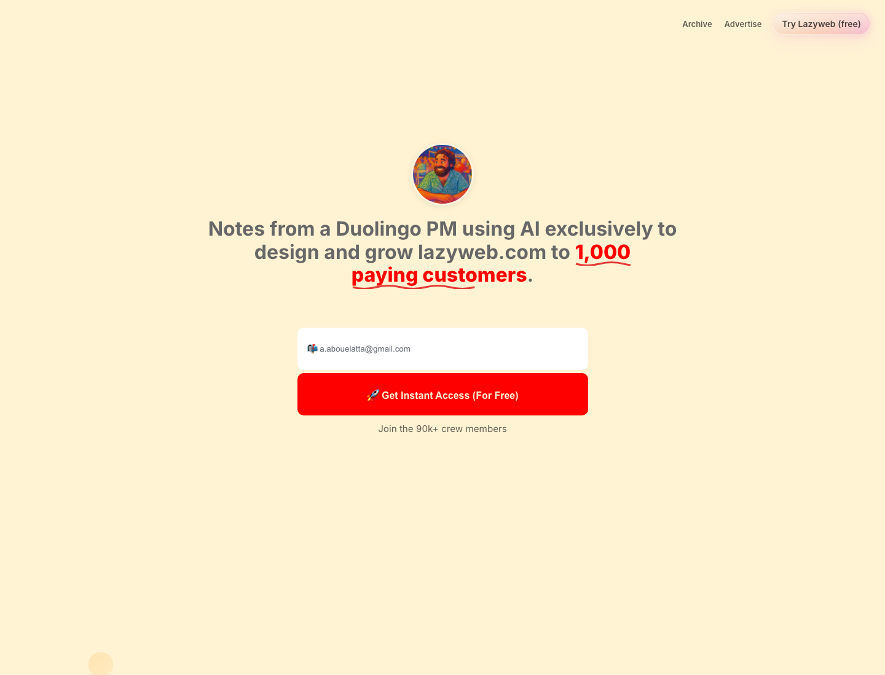

Desktop design research
A/B evidence unavailable: design-prevalence signal
Design Research: First 1000 Landing Page
Goal
Move First 1000 from bubbly personal signup page to a high-credibility founder/operator briefing that earns more email signups.
Recommendation

Recommendation: explore three sharper directions, defaulting to Operator Memo because it improves credibility and signup clarity without overdesigning the whole brand at once.
Inspo
Proof-heavy
Signup-direct
Creator
SaaS


Interesting Patterns
Testimonials should feel like proof, not decoration
Put the form beside the strongest reason
Quantified outcomes make credibility faster
Name the signup job directly
Evidence used: current live capture of first1000.co, Lazyweb desktop searches for newsletter landing page, social proof landing page, email signup landing page, SaaS landing page credibility, creator landing page testimonials, and newsletter testimonials signup. A/B-test data was unavailable in this account.